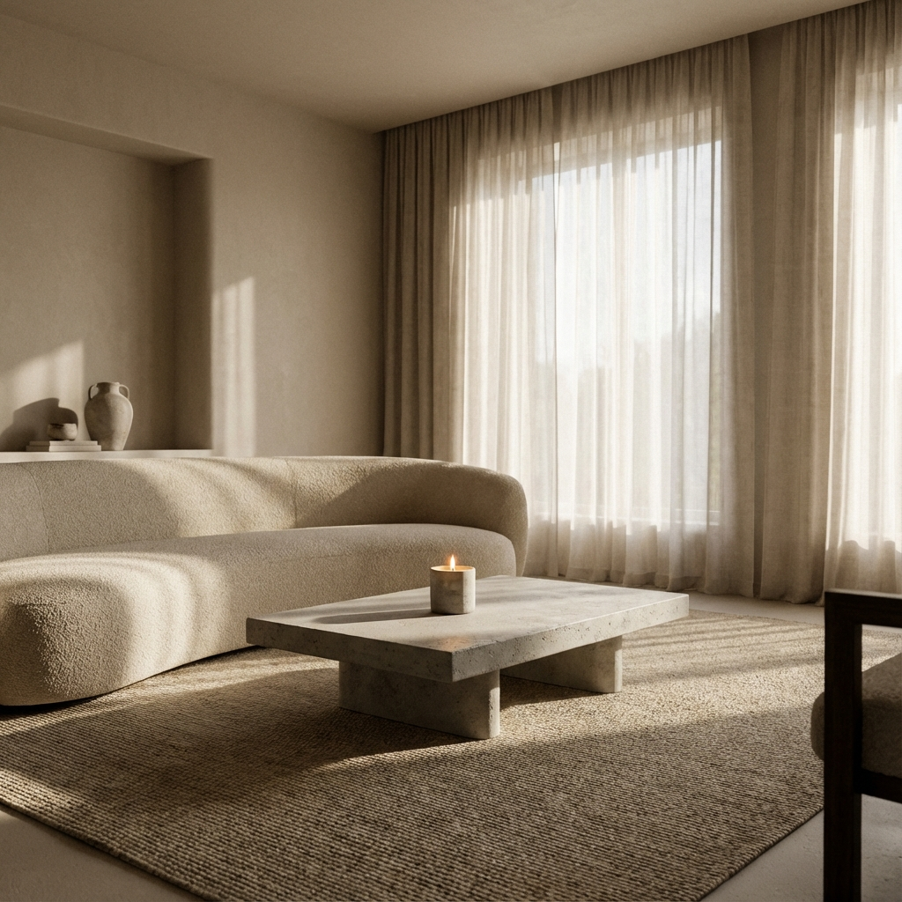
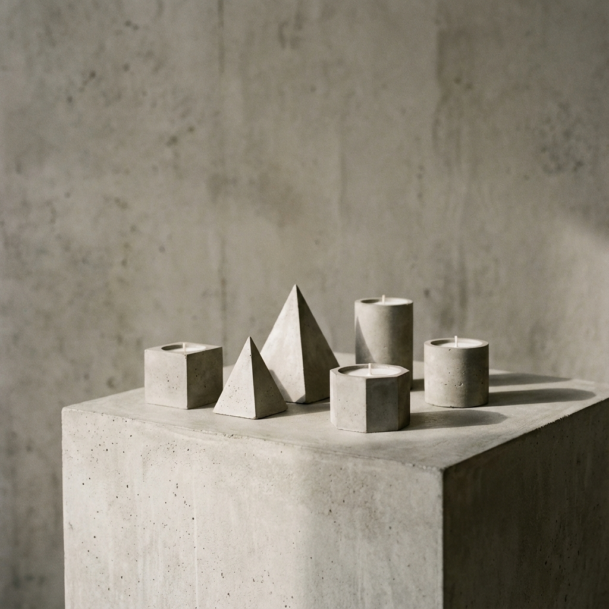

Le Guide Ultime du Minimalisme Chaleureux : Épurez sans refroidir (2026)

Vous rêvez d'un intérieur digne d'un magazine d'architecture, mais vous avez peur de finir dans une clinique aseptisée ? C'est le piège classique du minimalisme mal compris.
La bonne nouvelle, c'est qu'il existe une approche plus humaine, plus tactile et infiniment plus vivante : le Warm Minimalism.
Dans ce guide complet, vous allez découvrir les 3 leviers exacts pour désencombrer votre maison tout en augmentant son niveau de confort et d'accueil.
1. Qu'est-ce que le "Warm Minimalisme" ?
Contrairement au minimalisme radical des années 90 (surfaces laquées, blanc optique, acier chromé), le minimalisme chaleureux conserve l'épure mais change les matériaux.
L'idée n'est pas de vivre avec moins pour le plaisir de la privation, mais de ne garder que ce qui a du sens et de la texture.
Les 3 piliers du style :
- La Palette : On remplace le blanc pur par des crèmes, des beiges, des greiges et des terracottas pales.
- La Forme : On privilégie les courbes organiques (comme notre bougie Sphère Zen) aux angles trop vifs.
- L'Âme : Chaque objet doit raconter une histoire ou avoir une fonction précise.

Figure 1 : L'impact des matériaux sur la perception de la chaleur.
2. La texture : L'ennemie du vide
C'est ici que se joue la différence. Si vous enlevez les objets inutiles, vous devez compenser par la richesse des surfaces. Un mur vide peint en blanc est ennuyeux. Un mur vide à la chaux ou en béton brut est une œuvre d'art.
La règle du "Toucher-Voir" : Si vous ne ressentez rien en passant la main sur un objet, posez-vous la question de sa place chez vous. Le béton, le lin, la laine bouclée invitent au toucher.
C'est pourquoi nous utilisons du béton artisan pour nos bougies. Ses petites bulles d'air et ses irrégularités captent la lumière différemment à chaque heure du jour.
Voir aussi : Comment nous fabriquons nos objets imparfaits dans l'atelier.
3. Sculpter la lumière
Dans un espace épuré, la lumière devient le meuble principal. Elle ne doit jamais être uniforme.
Comme nous l'avons vu dans notre article sur le sanctuaire de paix, il faut multiplier les sources indirectes.
- Lumière générale : Invisible, si possible dimmable.
- Lumière d'accentuation : Pour mettre en valeur une texture murale ou une plante.
- Lumière d'ambiance (La plus importante) : C'est le rôle de la bougie. Elle apporte une température de couleur très basse (1800K) qui signale à votre cerveau qu'il est temps de ralentir.
4. L'avis de l'expert
"Le minimalisme chaleureux, c'est l'art de laisser l'espace respirer sans étouffer l'humain qui l'habite. C'est un retour aux sources, aux matériaux de la terre." — Sarah Poniatowski, Designer Intérieur (Citation inspirante)
On passe à l'action ?
Vous n'avez pas besoin de tout rénover. Commencez par une zone : votre table basse ou votre chevet.
Et vous, quelle touche de texture manque-t-il dans votre salon aujourd'hui ? Dites-le-nous en commentaire !
📥 Téléchargez la Checklist "Warm Minimalist"
La liste des 50 objets à désencombrer sans regret et les 10 textures indispensables à intégrer.
3 Commentaires
Merci pour cet article ! Je n'avais jamais pensé à la notion de "texture vs vide". Je vais revoir mes coussins !
Laisser un commentaire